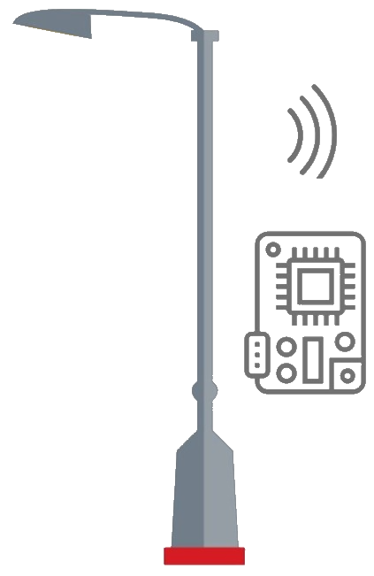

<div>
  <mat-toolbar color="primary">
    <mat-toolbar-row>
      <div class="d-flex justify-content-space-between align-items-center w-100">
        <div class="toolbar d-flex align-items-center justify-content-space-between pad-2"> 
          <span>Backoffice</span>
        </div>
        <div>
          <button mat-button>Condominios</button>
        </div>
      </div>
    </mat-toolbar-row>
  </mat-toolbar>
  <router-outlet>
  </router-outlet>
</div>